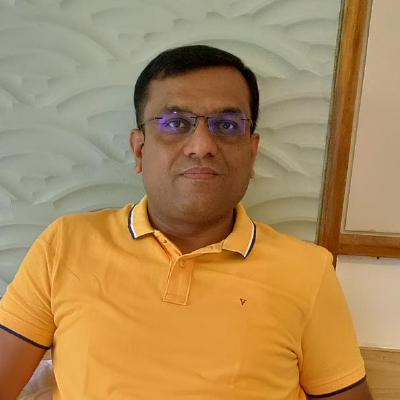

Pravin Dnyandeo Gawade
Senior Software Engineer
Download CV
Professional Summary
Senior Software Engineer with 18+ years of experience in C/C++, embedded systems, and cross-platform application development.
Expert in IoT, firmware development, multi-threading, and system-level programming. Proven track record in designing scalable systems and resolving complex production issues.
Technical Skills
- Languages: C, C++, Objective-C, Kotlin, Swift
- Frameworks: Win32, MFC, STL, Cocoa, UIKit, SwiftUI
- Platforms: Windows, macOS, Linux, Android, iOS
- Key Areas: OOP, Multi-threading, Embedded Systems, IoT, Firmware Development
- Tools: CVS, VSS
Professional Experience
Info-Bridge Solutions Pvt. Ltd., Pune
Senior Software Engineer | September 2010 – Present
Client: R-HUB Communications, Inc. (San Jose, CA, USA)
TurboTracker (IoT / Embedded System)
- Designed and developed firmware for low-power IoT devices using C++
- Implemented LoRa mesh communication protocol
- Developed companion mobile apps for Android (Kotlin) and iOS (SwiftUI)
- Optimized communication protocols for reliability and power efficiency
- Conducted hardware testing, debugging, and field validation
TurboMeeting (Web Conferencing Platform)
- Led a team of 3–4 engineers for defect resolution and stabilization
- Developed features using VC++ (Win32 & MFC)
- Worked on cross-platform support (Windows, macOS, iOS, Android)
- Troubleshot critical production issues and improved system stability
- Conducted code reviews and architectural enhancements
Multi-Protocol IM Client
- Implemented MSN and Yahoo messaging protocols
- Analyzed and optimized network communication
- Developed core messaging features in C++
Speaker Timer Pro
- Enhanced features and licensing system
- Improved overall performance and stability
iASYS Technologies Pvt. Ltd., Pune
Senior Software Engineer | October 2007 – August 2010
Orbit-E / Orbit-X (Automotive Diagnostics Tools)
- Developed desktop applications using VC++ (MFC)
- Built data visualization and analysis tools
- Implemented XML-based reporting system
- Optimized performance for handling large datasets
- Worked with clients: BASF, Tata Motors, ARAI, Eicher Motors
Key Achievements
- Designed and delivered a scalable IoT system using LoRa mesh networking
- Successfully stabilized TurboMeeting by leading the defect resolution team
- Contributed to long-term global product delivery for international client
- Significantly enhanced performance of legacy systems
Education
M.Sc. Computer Science – University of Pune, 2007
B.Sc. Computer Science – University of Pune
Additional Information
- Experience working with international clients in the USA
- Visited R-HUB Communications Inc., San Jose, USA for business meetings
- Strong analytical, debugging, and troubleshooting skills
- Mentor and effective team collaborator